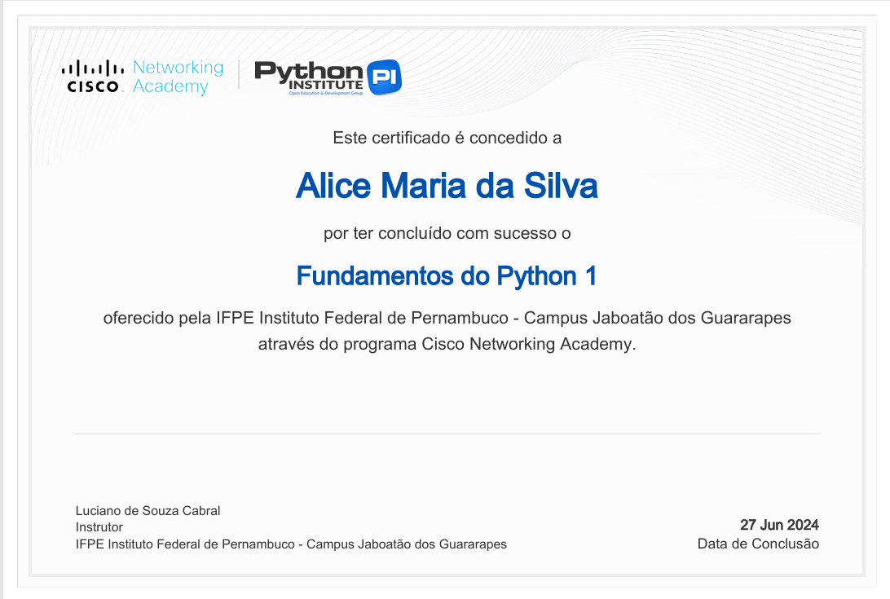
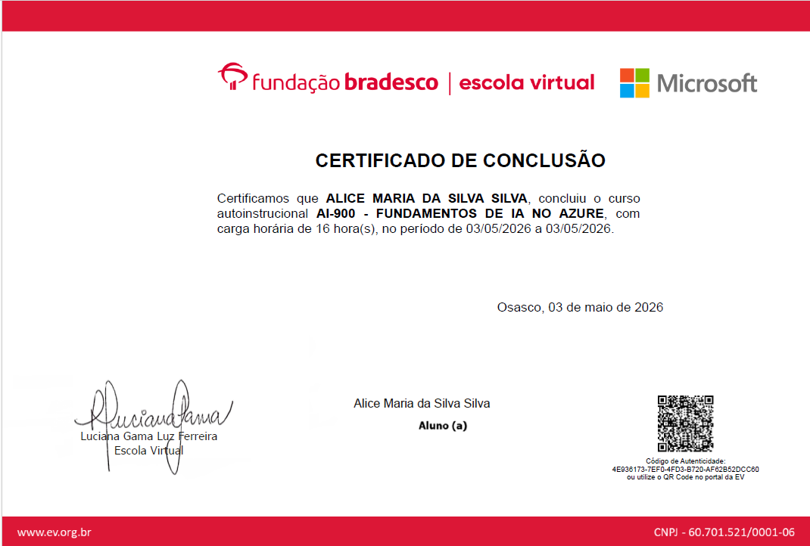
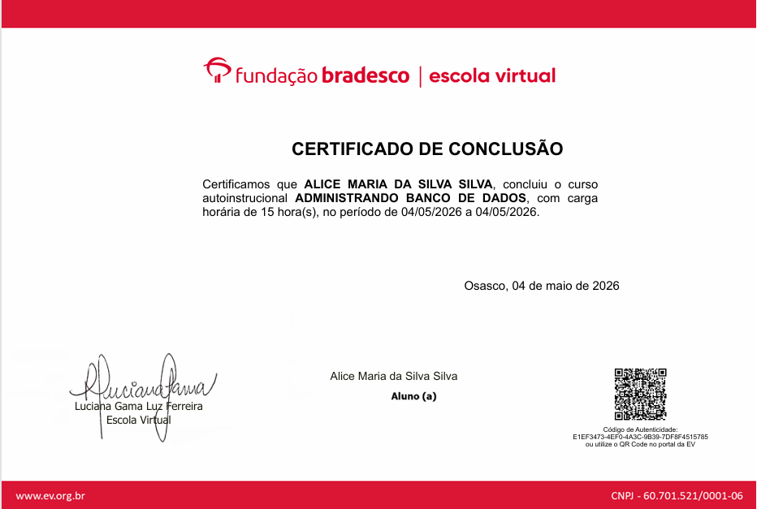
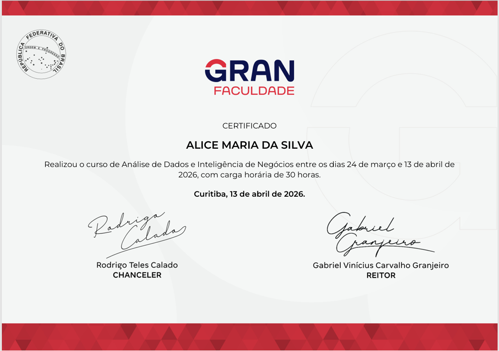
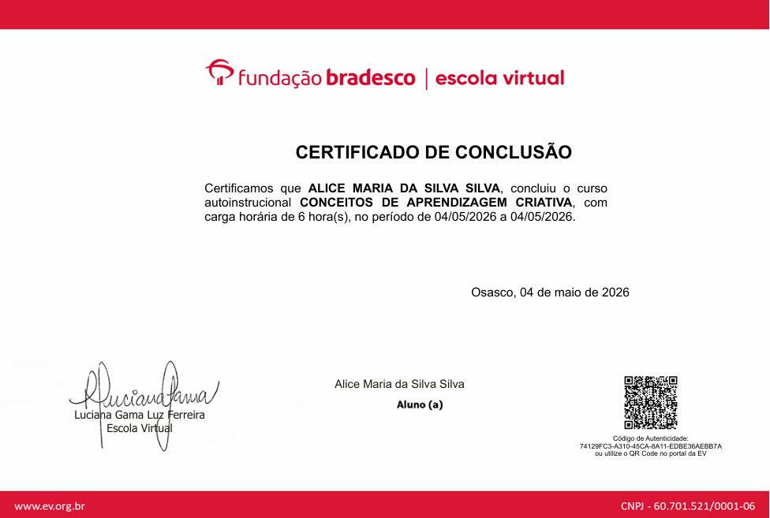

Certificados
Certificações e cursos que contribuíram para minha formação profissional.

Python Essentials 1
Cisco Networking Academy
Curso focado em fundamentos de programação com Python, lógica de programação e desenvolvimento de projetos práticos. Durante a formação, desenvolvi aplicações e fortaleci habilidades de resolução de problemas e raciocínio lógico.

AI-900 Fundamentos de IA no Azure
Bradesco
Formação voltada aos conceitos de Inteligência Artificial, Machine Learning e serviços de IA na plataforma Azure. O curso ampliou minha compreensão sobre aplicações práticas de IA em soluções tecnológicas.

Comunicação Empresarial
Bradesco
Curso focado no desenvolvimento da comunicação profissional, escrita corporativa, organização de ideias e relacionamento interpessoal, fortalecendo habilidades essenciais para trabalho em equipe.

Administrando Banco de Dados
Bradesco
Formação voltada à organização, gerenciamento e manipulação de dados, com introdução a SQL e conceitos fundamentais de banco de dados para aplicações e sistemas.

Análise de Dados e Inteligência de Negócios
Gran Cursos/Faculdade
Curso focado em análise de dados, geração de insights e apoio à tomada de decisões. Desenvolvi habilidades analíticas para transformar informações em soluções estratégicas.

Conceitos de Aprendizagem Criativa
Bradesco
Formação baseada em metodologias de aprendizagem ativa, criatividade e resolução de problemas. O curso incentivou o pensamento crítico, a inovação e a construção prática do conhecimento.